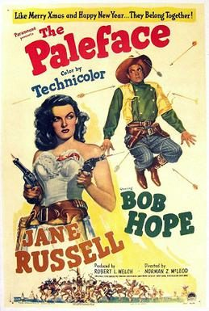

The Paleface
Starring: Bob Hope, Jane Russell, Robert Armstrong
Director: Norman Z. McLeod
Writer: Frank Tashlin
Studio: Paramount Pictures
The Paleface is a 1948 American comedy Western film directed by Norman Z. McLeod and starring Bob Hope as "Painless Potter" and Jane Russell as Calamity Jane. In the movie, Hope sings the song "Buttons and Bows" (by Jay Livingston and Ray Evans). The song won the Academy Award for Best Original Song that year.
Trivia
- The Painless Peter Potter character was to some extent inspired by a real dentist named Painless Parker.
Filming Locations
- The Paleface was filmed at the now-defunct Conejo Valley Airport and also at Deerwood Stock Farm, both in Thousand Oaks, California.
Previous Showings
3 Runs • 2 Festivals
2,370 tickets sold
Original Billings: 1 run (January 20, 1949)
Original Run: January 20, 1949 (Thursday - Wednesday)
All runs on record (3):
- January 20, 1949 (Thursday - Wednesday)Bob Hope, Jane Russell
- May 31 - June 1, 2003 · 1,882 ticketsbob-hope-2003w/ Son of Paleface
- March 5 - 6, 2026 · 488 ticketsMusicals, plus Bob Hopew/ Road to Rio